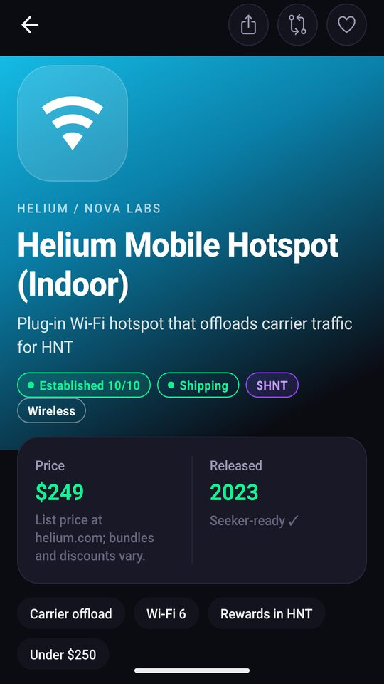
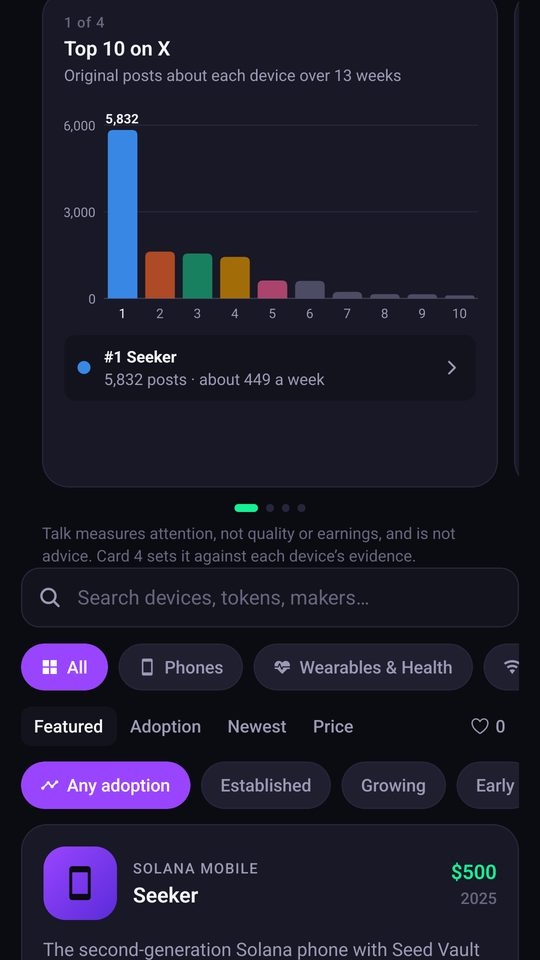
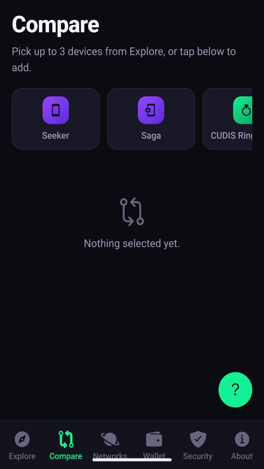
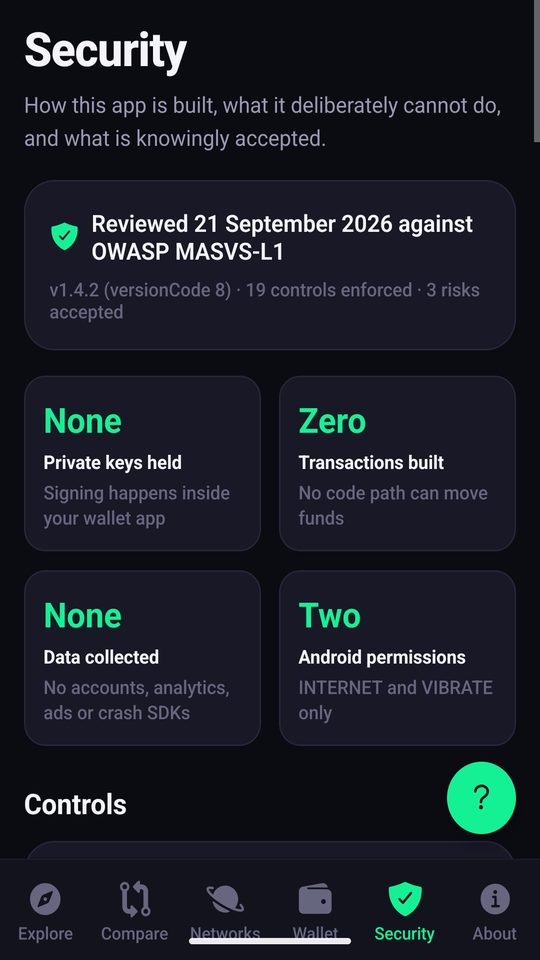

Solana DePIN hardware
A field guide to the physical side of Solana
Seeker DePIN Explorer is a free Android app for the Solana Seeker phone and other Android devices. It catalogues the phones, rings, hotspots, dashcams, sensors and EV chargers that earn on Solana — with specs, prices, how each one earns, and an evidence-based adoption score — so you can understand the hardware before you buy it.
Submitted to the Solana dApp Store
What it does
No account, no sign-up. Open it and browse.
A curated catalog
19 Solana devices across 16 networks, each with specs, list price, release date, timeline and links to the maker.
Adoption confidence
A 0–10 score built from five factors — time on market, installed base, independent reviews, community and payout record — with the evidence for every point.
Most talked about
Four charts ranking the top 10 devices by original posts on X, with momentum and talk set against the evidence. The method and every number are shown in the app.
Compare side by side
Put up to three devices next to each other: price, earnings model, specs and adoption score.
See what you already hold
Optionally connect a wallet to see which of these networks’ tokens you hold. Balances are read from public chain data; the app never sees your keys or sends a transaction.
Beyond Solana
Comparable hardware on Sui and Ethereum, kept in a clearly separate section and out of the Solana counts.
Screens from the app
Captured from the Android release build.



Privacy in one paragraph
- No account, no ads, no analytics, no tracking. Nothing about you is collected or sent anywhere.
- One setting is stored on your phone — whether to skip the opening film — and the Security tab can clear it.
- The only network request is to a public Solana node, and only after you choose to connect a wallet.
- No dangerous Android permissions. No camera, microphone, location, contacts or files.
Full details: Privacy Policy.
Publisher
Rene Chacon — independent developer
Seeker ID: ucsdmiami2020.skr
Contact: rchac005@gmail.com
Questions, corrections and device suggestions are welcome — the app can also open a prefilled public suggestion for you to review and post.
Legal
The same documents shown in the app under About → Legal.
Privacy Policy Terms of Use & EULA Copyright & Attribution